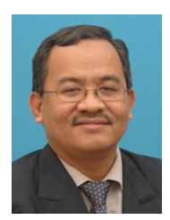
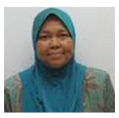
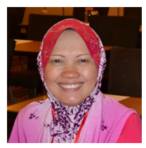
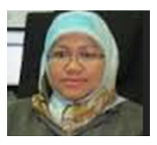

|  Sidek |
 Marzanah |
 Fatimah |
|  Wan Zuhanis |
Khaironi |
Koh |
PROFESOR DR SIDEK AB AZIZ kini berkhidmat di Jabatan Fizik, Fakulti Sains UPM. Beliau meminati bidang teknologi ICT sewaktu mengikuti program Sarjana Muda (Kepujian) di UKM Bangi, walaupun teras utama pengajiannya adalah Fizik. Beliau pernah menjawat Guru Sains di MRSM Seremban sebelum melanjutkan pengajian peringkat ijazah lanjutan di Universiti of Bath, United Kingdom.
Setelah dikurniakan ijazah Kedoktoran PhD (Ultrasonik dan Fizik Keadaan Pepejal), beliau terus menyumbang kepakaran ICT untuk UPM dan pernah menjawat Timbalan Pengarah di Pusat Komputer, Institut Multimedia dan juga Pusat Pengurusan Penyelidikan (RMC), sebelum dilantik sebagai Pengarah Pusat Pembangunan Akademik (CADe).
Beliau menjadi peneraju sistem pengurusan pembelajaran (LMS) menerusi inovasi eSPRINT dan seterusnya PLMS (Putra Learning Management System). Penyelidikan komprehensif LMS membolehkan beliau dikurniakan Sarjana Sains (Multimedia dalan Pengajaran-Pembelajaran) dari UPM. Beliau juga merupakan mantan Ketua Laboratori Institut Multimedia dan Perisian, dan juga Dekan Fakulti Sains UPM.
Kini beliau berkongsi kepakaran sebagai Felow Bersekutu CADe (Inovasi dalam Pengajaran-Pembelajaran). Beliau pernah memenangi Anugerah Felowship Naib Canselor (Kategori Pengajaran) UPM, Anugerah Saintis Muda Kebangsaan, Tokoh Pekerja Kebangsaan dan juga di peringkat UPM. Kepakaran ICT memboleh beliau dilantik mengganggotai MEIPTA (Majlis ePembelajaran IPTA) dan sebagai jurulatih ICT AKePT sehingga kini.
My Home | Sidek Aziz | Marzanah | Fatimah | Wan Zuhanis | Khaironi | Koh Tieng Wei |
PROFESOR MADYA DR. MARZANAH A. JABAR sekarang berkhidmat sebagai pensyarah di Jabatan Kejuruteraan Perisian dan Sistem Maklumat, Fakulti Sains Komputer dan Teknologi Maklumat UPM. Mendapat PhD dalam bidang Pengurusan Sistem Maklumat dari Universiti Putra Malaysia. Beliau sangat aktif dalam penyelidikan dalam bidang Sistem Maklumat, Kejuruteraan Perisian dan penggunaan teknologi dalam pembelajaran.
Kepakaran beliau dalam bidang IT telah menjadikan beliau dilantik sebagai pakar rujuk oleh Pusat Pembangunan Akademik UPM (CADe )dalam bidang teknologi untuk pembelajaran. Beliau juga telah dilantik sebagai ahli kumpulan pembangunan eSPRINT dan Putra Learning Management System (PLMS), iaitu aplikasi untuk pembelajaran secara online di UPM, berdasarkan pengalaman beliau sebagi seorang Jurutera Perisian sebelum dilantik sebagai pensyarah.
My Home | Sidek Aziz | Marzanah | Fatimah | Wan Zuhanis | Khaironi | Koh Tieng Wei |
PROFESOR MADYA DR. FATIMAH SIDI adalah pensyarah di Jabatan Sains Komputer, Fakulti Sains Komputer dan Teknologi Maklumat, Universiti Putra Malaysia. Beliau mendapat pendidikan awal di Sekolah Menengah Bantuan St Teresa’s Kuching Sarawak. Jurusan pengkhusuan beliau dalam Doktor Falsafah (PhD) adalah dalam bidang Pengurusan Sistem Maklumat diperolehi dari Univeriti Putra Malaysia serta Master Sains dan Bacelor Sains Komputer daripada universiti yang sama.
Beliau telah dilantik sebagai ketua unit merintis dan pengerak Unit Pembangunan Sistem dalam memperkasakan serta mencetus innovasi bagi hak cipta perisian applikasi. Kepakaran dan pengalaman beliau dalam ICT telah memberi kepercayaan untuk Pusat Pembangunan Akademik UPM (CADe) melantik beliau sebagai pakar rujuk ICT untuk pembangunan teknologi dalam pengajaran dan pendidikan.
My Home | Sidek Aziz | Marzanah | Fatimah | Wan Zuhanis | Khaironi | Koh Tieng Wei |
DR. WAN ZUHAINIS SAAD merupakan Pensyarah Kanan di Jabatan Mikrobiologi, Fakulti Bioteknologi dan Sains Biomolekul, Universiti Putra Malaysia. Berasal dari Kedah, mendapat Ijazah Kedoktoran dalam bidang Mikrobiologi dari UPM. Beliau adalah seorang yang aktif dalam pembelajaran dan pengajaran. Beliau terlibat sebagai penceramah dalam Kursus Asas Pengajaran bagi pensyarah baharu dan kursus-kursus seperti Interactive Lecture, Modular Approach dan E-Learning.
Beliau telah memenangi Anugerah Fellowship Naib Canselor (Kategori Pengajar Muda) 2012, Anugerah Pensyarah Pilihan 2012, Anugerah Perkhidmatan Cemerlang 2011, Anugerah Pensyarah Paling Aktif Menggunakan PutraLMS 2012 dan 2013. Beliau sentiasa berusaha untuk memajukan diri dalam meningkatkan keberkesanan pengajaran dan pembelajaran.
My Home | Sidek Aziz | Marzanah | Fatimah | Wan Zuhanis | Khaironi | Koh Tieng Wei |
DR. KHAIRONI YATIM SHARIF mendapat pendidikan di Sekolah Menengah Agama Izzuddin Shah, Ipoh, Perak. Beliau dianugerahkan ijazah Sarjana Muda (Sains Komputer) dan Sarjana (Kejuruteraan Perisian Masa Nyata) dari Universiti Teknologi Malaysia. Seterusnya Kepakaran beliau dalam bidang kejuruteraan perisian diiktiraf apabila dikurniakan ijazah doktor falsafah (PhD) dari University of Limerick Ireland.
Sekarang beliau merupakan Pensyarah Kanan di Jabatan Kejuruteraan Perisian dan Sistem Maklumat, Fakulti Sains Komputer dan Teknologi Maklumat, Universiti Putra Malaysia (UPM). Selain aktif sebagai penyelidik dalam Kumpulan Penyelidik Kejuruteraan Perisian (SERG), beliau juga aktif sebagai pemikir, pembangun dan penggerak Kumpulan Innovasi Pembelajaran dan Pengajaran, Pusat Pembangunan Akademik (CADe), UPM.
My Home | Sidek Aziz | Marzanah | Fatimah | Wan Zuhanis | Khaironi | Koh Tieng Wei |
DR. KOH TIENG WEI berasal dari Sitiawan, Perak dan mengikuti pendidikan sekolah menengah di SMK Nan Hwa sebelum melanjutkan pelajaran di Universiti Putra Malaysia (UPM), Serdang. Beliau berjaya memperolehi sijil Bacelor Sains Komputer (Kepujian) Kelas Pertama pengkhususan dalam bidang Kejuruteraan Perisian. Keputusan cemerlang beliau telah menarik minat UPM untuk menawarkan beliau tempat sebagai tenaga akademik di Fakulti Sains Komputer dan Teknologi Maklumat.
Seterusnya beliau dianugerahkan ijazah sarjana dan doktor falsafah dalam bidang pengukuran dan penganggaran perisian (Software Measurement & Estimation) dari UPM. Kini, beliau bertugas sebagai seorang pensyarah kanan dan juga penyelidik berpengalaman di Jabatan Kejuruteraan Perisian dan Sistem Maklumat, Fakulti Sains Komputer dan Teknologi Maklumat, UPM. Beliau juga sangat aktif di dalam Kumpulan Innovasi dan Pengajaran, Pusat Pembangunan Akademik (CADe), UPM.
My Home | Sidek Aziz | Marzanah | Fatimah | Wan Zuhanis | Khaironi | Koh Tieng Wei |